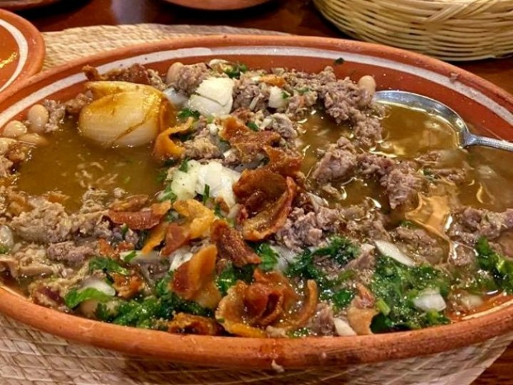
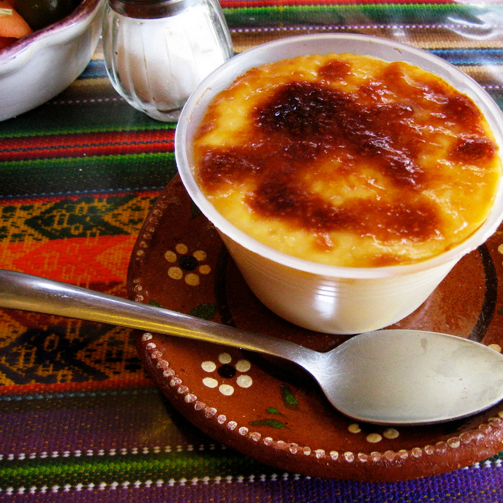

Torta ahogada
La torta ahogada es uno de los platillos mexicanos más típicos y representativos del estado de Jalisco,
particularmente de la ciudad de Guadalajara; aunque su popularidad se ha extendido a diferentes regiones del país,
aunque difícilmente se encontraba en otros estados de México, ahora es más común encontrarlo en otras ciudades y poblaciones
mexicanas, eso si, argumentando que el pan proviene de Guadalajara.
 Las tortas ahogadas se elaboran con un pan conocido como "birote" o "birote salado",
característico de la región, cuya consistencia es mucho más dura que el bolillo y, por tanto, más crujiente en la capa externa, menos permeable y, su interior, más firme, con un sabor
ligeramente agrio debido a una fermentación un poco más larga, lo que permite sumergirlo en distintas salsas sin perder su consistencia. El birote se rellena de carnitas (de cerdo) estilo
Jalisco en rebanadas, cubos o trozos, luego se sumerge en salsa picante de chile de árbol de Yahualica que tiene características especiales de sabor, aroma y picor, además se le agregan
condimentos como vinagre, comino y ajo, entre otros. Finalmente, se agrega la salsa de jitomate y rebanadas de cebolla desflemada (sumergida en limón). Las tortas ahogadas tradicionales
recibieron ese nombre pues se sumergían en chile hasta que salieran burbujas.
Las tortas ahogadas se elaboran con un pan conocido como "birote" o "birote salado",
característico de la región, cuya consistencia es mucho más dura que el bolillo y, por tanto, más crujiente en la capa externa, menos permeable y, su interior, más firme, con un sabor
ligeramente agrio debido a una fermentación un poco más larga, lo que permite sumergirlo en distintas salsas sin perder su consistencia. El birote se rellena de carnitas (de cerdo) estilo
Jalisco en rebanadas, cubos o trozos, luego se sumerge en salsa picante de chile de árbol de Yahualica que tiene características especiales de sabor, aroma y picor, además se le agregan
condimentos como vinagre, comino y ajo, entre otros. Finalmente, se agrega la salsa de jitomate y rebanadas de cebolla desflemada (sumergida en limón). Las tortas ahogadas tradicionales
recibieron ese nombre pues se sumergían en chile hasta que salieran burbujas.
Con el tiempo, algunas personas han ido evolucionando la preparación del platillo, lo cual ha derivado en el uso de diferentes tipos de salsas, chiles, tamaños, e ingredientes agregados,
dando con esto una diversidad y un toque personal a las tortas ahogadas, dependiendo el lugar donde se consuma.
Carne en su jugo
La carne en su jugo es una receta representativa de la gastronomía del estado mexicano de Jalisco. Desde hace algunos años su popularidad se ha extendido por otros estados,
influyendo en la gastronomía de lugares como Aguascalientes y Guanajuato.
El origen supuesto de la carne en su jugo se ubica en Piedra Amarilla, municipio de Acatic en el estado de Jalisco, por la familia de la Torre.
Consiste en un guiso de carne de res picada y asada en su propio jugo, frijoles de la olla y trozos de tocino previamente dorado; se acompaña con cebolla picada y cilantro. Se sirve normalmente en un plato de barro y suele acompañarse de tortillas
de maíz, totopos, frijoles refritos, cebollas guisadas, limón, rábanos, guacamole y salsa picante de tomate martajada.
La carne en su jugo no es un platillo ancestral. Ningún recetario antiguo la registra.
El barrio de Santa Tere, donde se localiza, concentra gran número de expendios de carnes en su jugo, aunque es posible encontrar esta preparación en cualquier zona de la metrópoli tapatía
Consiste en un guiso de carne de res picada y asada en su propio jugo, frijoles de la olla y trozos de tocino previamente dorado.3
Se acompaña con cebolla picada y cilantro y se sirve normalmente en un plato de barro.
Suele acompañarse de tortillas de maíz, totopos, frijoles refritos con elote, cebollas guisadas, limón, guacamole y salsa de tomate martajada.
La bebida tradicional para el acompañamiento de la comida es agua de horchata o jamaica
Jericalla
Este postre tiene muchas versiones sobre su origen, una de ellas cuenta que el postre lleva el nombre del lugar en donde nació una de las monjas que cocinaba para los niños huérfanos del Hospicio Cabañas, ubicado en el antiguo barrio
de San Juan de Dios en el centro de Guadalajara. El nombre del pueblo es Jérica, en la comunidad de Valencia en España
La monja tomó los ingredientes y los mezcló, los puso a hornear y al tener que servir a tantos niños que estaban en el Hospicio Cabañas,
lo olvidó dentro del horno y al momento de sacarlo notó que se quemó de la parte superior y así es como la jericalla nos presenta una golosina que evoca el sabor del flan, pero su consistencia es más ligera en la boca, el sabor del dorado que
la cubre (a leche quemada) es su principal característica, otorgándole un sabor especial y muy agradable.
De esta manera, la receta y su popularidad se fueron extendiendo poco a poco por las colonias de Guadalajara y otros estados, hasta convertirse en un postre insignia tradicional de ese lugar.
Actualmente la jericalla goza de reconocimiento internacional, su delicioso sabor y su fácil elaboración, le han convertido en uno de los favoritos de los hogares mexicanos.
Regresar